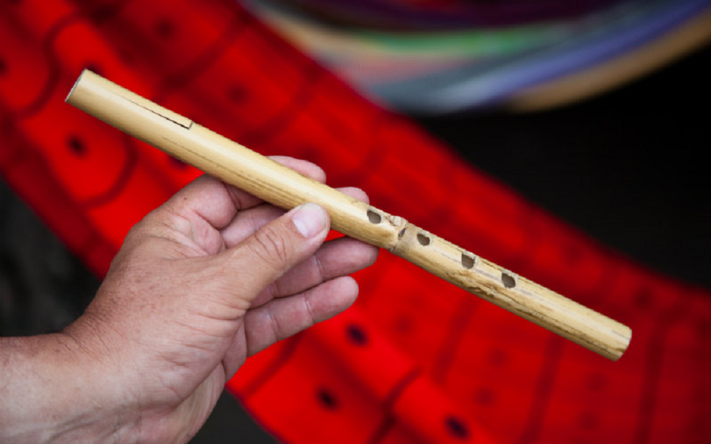

Caña de Millo
Note 023
Home > Blog A Musician's Log > Note 023
An Idioglot Clarinet
On Colombia's Caribbean coast, the caña de millo is known by several names. In Atlántico, it is commonly called caña or flauta de millo; across parts of Bolívar, Córdoba, and Sucre, it is the pito atravesao. The second name describes its position in the player's mouth. The instrument extends horizontally across the face, resembling a transverse flute.
The resemblance ends there.
A caña de millo is a short tube, open at both ends and usually furnished with four finger holes. Near one end, a narrow tongue is cut directly from the wall. The player encloses this tongue within the mouth and sets it into vibration through the movement of air.
Sound arises from a reed, not from an airstream striking an edge. Calling it a flauta de millo is perfectly valid as a vernacular name. The problem begins only when the name is mistaken for a technical description. Organologically, the caña de millo is not a flute. It is an idioglot clarinet.
The Reed in the Wall
The reed of the caña de millo is idioglot because it is fashioned from the same material as the tube. It is not manufactured separately and attached later, as in a modern orchestral clarinet. One end of the tongue remains joined to the wall while the rest is cut free enough to vibrate against its opening.
A single piece of plant material therefore performs several tasks. It forms the body, the air column, the finger holes, and the vibrating reed.
This integration makes construction delicate. The length, thickness, flexibility, and elevation of the tongue all affect the instrument's response. A slight change in the cut alters resistance, pitch, and tone. Wear cannot necessarily be corrected by inserting a new reed, because the reed belongs to the wall from which it was raised. The maker works directly upon the instrument's skin.
Breath in Both Directions
One of the most striking features described in the literature is the use of both outward and inward breath.
George List distinguishes several registers produced through combinations of fingering, breath direction, air pressure, and the opening or closing of the end of the reed near the mouth. Inhalation is not simply hidden between phrases. It can become part of the sounding phrase itself, allowing the melodic line to continue in another register.
This technique is sometimes described loosely as circular breathing, but the mechanisms are different. Circular breathing allows a musician to inhale through the nose while stored air continues to leave the mouth. In the technique described for the caña de millo, the instrument sounds during the inward movement of air.
The four finger holes therefore do not determine the full pitch inventory by themselves. Pitch and register emerge from the interaction of fingering, pressure, lip position, breath direction, and the treatment of one of the tube's ends. Notes bend. Attacks sharpen. The reed can move from a relatively stable tone into a rougher and more saturated vibration.
The apparent simplicity of the instrument conceals an exceptionally responsive encounter between mouth, air, and plant fiber.
Against the Drums
The caña de millo belongs to an ensemble. A traditional conjunto de millo commonly brings it together with tambor alegre, llamador, tambora, and maracas or guache. The percussion creates a dense rhythmic field through which the reed must remain audible.
Its timbre is suited to that position. The caña does not cultivate the rounded tone expected from an orchestral woodwind. Its sound is nasal, buzzing, and rich in upper partials. Those qualities give it definition against drums, voices, environmental noise, and the movement of dancers.
What might seem excessive in a chamber recital becomes effective in a street, courtyard, procession, or rueda de cumbia.
The instrument does more than place melody above rhythm. Its short phrases, register changes, sharp entries, and sustained tones interact with the percussion cycle. The drums establish the field through which bodies move. The caña gives that field a melodic profile.
Virtuosity lies not only in producing pitches. A cañamillero, a player of caña, must regulate a sensitive reed inside a rhythmic structure already in motion. An attack must arrive at the correct point in the cycle. A sustained note must retain its shape against the percussion. A change of breath must preserve the phrase while altering its register.
The Ear That Wanted Purification
The sound of the caña de millo has not always been heard on its own terms.
Federico Ochoa Escobar records a revealing contrast in its early written reception. In 1936, Daniel Zamudio described the melody of a small coastal flute as short and "terribly tiresome." In the same discussion, he treated the mixture of African and Spanish musical elements as a harmful hybrid requiring purification.
His response belonged to a broader intellectual environment in which refinement was measured against European ideas of tonal order, smooth timbre, and disciplined resonance.
Emirto de Lima heard the instrument differently. Writing during the same period, he described a "sweet" caña whose entrance arrested the movement of those gathered at a celebration.
One writer heard monotony and contamination. Another heard a sound capable of commanding collective attention. The instrument had not changed. The listening position had.
The caña de millo refuses the acoustic hierarchy that prizes smooth tone, tempered pitch, controlled resonance, and distance from bodily noise. The buzz of the reed remains audible. Breath pressure leaves marks on pitch. Register changes can be abrupt. The instrument does not conceal the physical conditions of its sounding.
These are not signs of an unfinished clarinet or an undisciplined flute. They constitute the caña's own technical and expressive field.
A Name Without a Settled Origin
The expression caña de millo points toward millet or sorghum, and George List argued that the instrument was originally made from a millet stalk. By the time he conducted fieldwork in communities such as Evitar, however, makers were using several kinds of local cane. The name had become more stable than the material.
Its deeper genealogy remains unresolved. List proposed an African origin, comparing the Colombian instrument with transverse idioglot clarinets documented in the West African savanna. The resemblances include the tongue cut from the tube, the transverse playing position, and the use of air moving in both directions.
Other writers have proposed Indigenous connections, particularly with reed instruments used by Wayuu communities, while Zenú communities have also claimed the caña de millo as part of their ancestral practice.
None of these comparisons establishes a continuous historical line. Similar structures may result from transmission, convergence, or histories whose intermediaries have disappeared from the record.
The uncertainty should remain visible. The evidence does not authorize a pure African or Indigenous origin story. What can be stated more securely is that the caña de millo, as a named instrument and musical practice, developed on Colombia's Caribbean coast. Its present identity was made through local materials, makers, players, repertories, and festive life.
A short length of cane becomes tube, air column, and reed. The cañamillero breathes through the tongue cut into its wall, and the coast gives that incision a voice.
Readings
- D'Amico, Leonardo (2013). Cumbia Music in Colombia: Origins, Transformations, and Evolution of a Coastal Music Genre. In Fernández L'Hoeste, Héctor & Vila, Pablo (eds.) Cumbia! Scenes of a Migrant Latin American Music Genre. Durham: Duke University Press, pp. 29-48.
- List, George (1983). Music and Poetry in a Colombian Village: A Tri-Cultural Heritage. Bloomington: Indiana University Press.
- List, George (1988). La caña de millo: construcción y técnica. A Contratiempo, 2, pp. 101-109.
- Ochoa Escobar, Federico (2012). Las investigaciones sobre la caña de millo o pito atravesao. Cuadernos de Música, Artes Visuales y Artes Escénicas, 7 (2), pp. 159-178.